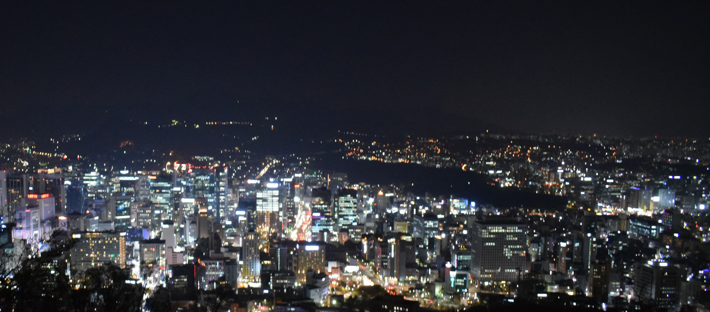

Vier nachten licht en muziek
Vijftig optredens, twaalf pleinen, één stad.
Programma
Woensdag 12
Opening op de Kouter met fanfare en lichtparade.
Donderdag 13
Elektronische sets in de oude dokken tot vier uur 's nachts.
Vrijdag 14
Akoestische concerten in de binnentuinen van het begijnhof.
Zaterdag 15
Slotavond met vuurwerk boven het water.